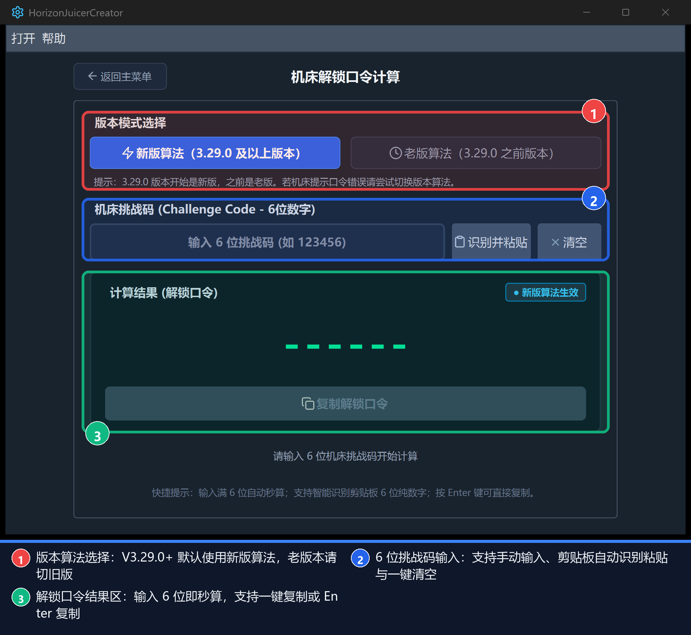
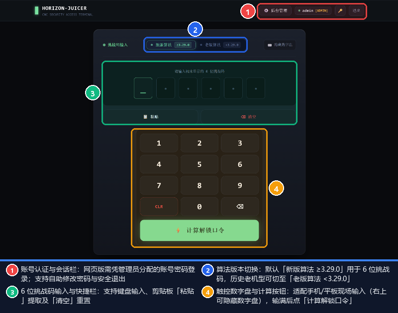
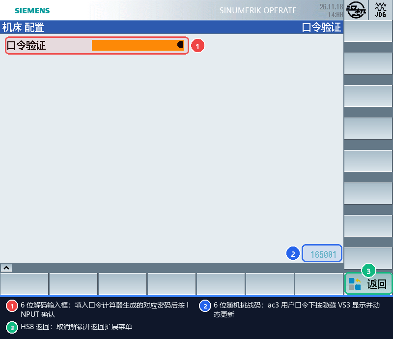

3.1 系统动态解锁口令计算器
为了防止终端操作员在日常生产中误改砂轮类型、自动门信号、自动对刀模式或安全限制等机床底层参数，Horizon-Juicer 在 CUSTOM → 机床配置 入口前设置了口令保护校验界面（a_setting.com Mask0）。调试人员可使用以下两种官方工具计算临时解锁密码：
- 桌面端工具：
HorizonJuicerCreator内置的 口令计算 工具（适用于工程电脑离线计算）； - 网页端工具：在线口令计算器 https://hjpc.niekun.net/（适用于手机、平板或无桌面客户端的现场设备；需要向管理员申请专属账户和密码方可访问）。

1. 新版（>= V3.29.0）与历史版本（< V3.29.0）模式切换
从 V3.29.0 起，口令体系由“静态出厂编号映射”升级为“一机一密 + 每次动态滚动挑战码”架构。桌面端与网页版计算器顶部均提供版本切换开关，用于适配不同现场程序包：
| 模式选项 | 适用软件库版本 | 输入数据源 | 特点说明 |
|---|---|---|---|
| V3.29.0 及以上版本（默认） | Horizon-Juicer >= V3.29.0 |
机床上随机生成的 6 位数字挑战码 | 采用基于私有配置文件与硬件持久种子的动态挑战-响应机制，每次进入配置界面challenge码递增变化，防离线枚举与固定密码传播 |
| V3.29.0 以前历史版本 | 早期历史程序包 | 设备信息 页中的固定出厂编号（INI[130]） |
兼容老机型历史版本： ① 顶部切换至 老版算法（3.29.0 之前版本）； ② 在机床端 CUSTOM → VS1 出厂信息 读取设备出厂编号（INI[130]）；③ 输入计算器后直接生成并复制解锁口令 |
2. 网页版口令计算器（https://hjpc.niekun.net/）
访问权限说明：
网页版口令计算器（https://hjpc.niekun.net/）采用账户与密码认证访问机制，不对外匿名开放。调试、售后或其他授权人员首次使用前，必须先向系统管理员申请开通专属账号与初始密码。登录后可点击右上角钥匙图标自助修改个人密码，计算完成后建议点击右上角退出按钮安全登出。

| 对比项 | 桌面版（HorizonJuicerCreator） |
网页版（https://hjpc.niekun.net/） |
|---|---|---|
| 访问方式 | Windows 桌面客户端离线运行，随配置生成工具一体安装 | 浏览器在线访问，兼容 PC、手机与平板触屏终端 |
| 账号与权限 | 打开授权桌面软件即可直接使用 | 需输入账户与密码登录后方可使用（须向管理员申请开通） |
| 算法版本支持 | 均支持 新版算法（3.29.0 及以上版本） 与 老版算法（3.29.0 之前版本） 切换 |
均支持 新版算法 >=3.29.0 与 老版算法 <3.29.0 切换 |
| 输入与算码体验 | 支持手动键入、识别并粘贴（自动提取 6 位数字）与 清空；输满 6 位自动秒算，支持一键复制或按 Enter 复制 |
支持键盘输入、剪贴板 粘贴 提取、清空 及内置触控数字盘（右上可点击 隐藏数字盘 折叠）；输满后点击 计算解锁口令 获取结果 |
| 典型适用场景 | 调试电脑离线作业或配套生成程序包时就地算码 | 现场仅携带手机/平板应急解锁，或远程售后协助算码 |
3. 现场解锁操作全流程（新版 >= V3.29.0）
- 在机床 SINUMERIK Operate 界面先确认当前访问等级不低于
ac3（用户口令；或服务口令ac2/ 制造商口令ac1），否则VS8/VS1/VS3将不可见或无响应；随后按CUSTOM键进入 Welcome 主页面，点击右侧VS8（扩展菜单[≡▸]）→VS1（机床配置） 进入口令验证页（Mask0）； - 在
ac3（用户口令及以上） 权限下按下VS3Softkey（右下角隐藏触发区），界面右下角区域即会显示一组当前轮次的 6 位数字挑战码（范围100000～999999，如下图右下角所示）；

- 选择任一官方计算器入口（确保处于 新版算法 模式）：
- 桌面端：打开工程师电脑上的
HorizonJuicerCreator.exe，进入 口令计算 卡片； - 网页端：在浏览器打开 https://hjpc.niekun.net/，使用向管理员申请的账户和密码登录。
- 桌面端：打开工程师电脑上的
- 输入、清空与计算：
- 桌面端：手动键入该 6 位挑战码，或复制微信/聊天消息后点击
识别并粘贴（内置正则\b\d{6}\b智能提取 6 位数字）；输入满 6 位即自动计算并显示 6 位数字解锁口令（未输入合法 6 位码时显示------），点击清空可一键归零； - 网页端：通过键盘、页面
粘贴按钮或触控数字盘输入 6 位挑战码（右上可点击隐藏数字盘，数字盘内CLR可清空重置），随后点击底部计算解锁口令按钮生成 6 位解锁口令。
- 桌面端：手动键入该 6 位挑战码，或复制微信/聊天消息后点击
- 快捷复制：桌面端按键盘
Enter键或点击结果旁复制按钮即可写入系统剪贴板；网页端同样可直接复制生成的 6 位口令； - 回到机床界面，将口令填入 口令验证（
PASSWD_CHECK）输入框，验证通过后立即自动跳转至 机床配置 主参数页（Mask1）。
安全声明：内部口令派生算法与私有密钥常量（形如
******）受工程保密约束，不在本操作手册公开数学公式。所有现场解锁均须使用授权HorizonJuicerCreator客户端或经管理员开通账号的网页版口令计算器（https://hjpc.niekun.net/），配合目标设备配套的加密配置完成。
4. machine_sec.ini 配置层级与异常状态排查
自 V3.29.0 起，机床端 a_setting.com 在打开口令校验页时会自动按严格优先级搜索私有安全配置文件 machine_sec.ini：
检索优先级：user 目录 > oem 目录 > siemens 目录
目标路径示例：/<层级>/sinumerik/hmi/cfg/machine_sec.ini
检索并校验成功后方可使用动态计算；若该文件缺失、字段不完整或校验参数非法，界面右上角红色提示区（MSG）会自动给出明确告警信息：
| HMI 提示状态 | 底层状态标识（CFG_STATUS） |
原因分析 | 现场处理建议 |
|---|---|---|---|
| 配置正常 | 1 |
在 user / oem / siemens 任一路径成功读取到合法完整参数 |
按正常流程按 VS3 获取 6 位挑战码并输入计算结果解锁 |
| 配置丢失 | 0 |
遍历所有 SinuTrain/PCU/NCU 路径均未找到 machine_sec.ini |
检查 System-CF-Card/user(oem/siemens)/sinumerik/hmi/cfg/ 是否完整拷贝导入，并确认文件权限 |
| 配置缺损 | 2 |
找到了 machine_sec.ini，但内部必要配置键缺失或被误删 |
从正确生成包重新提取 machine_sec.ini 覆盖至目标层级目录，切勿手动删减配置字段 |
| 配置无效 | 3 |
参数取值越界或校验基数/取模配置不符合 6 位码规则（例如关键参数为 0 或上下限越界） | 使用标准模板生成的 machine_sec.ini 替换被损坏的文件 |